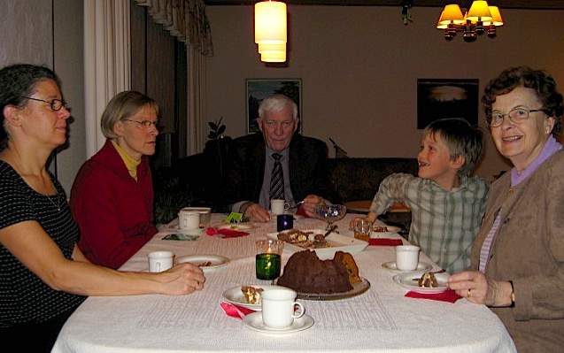
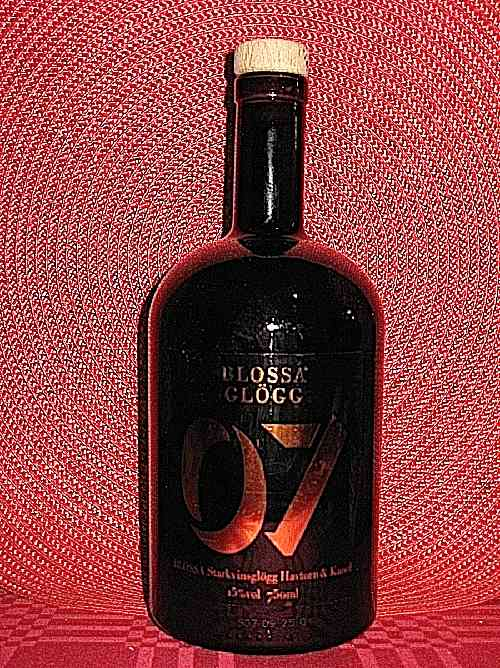
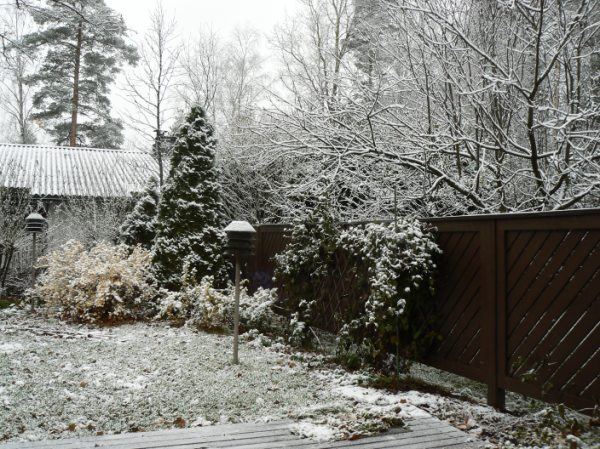
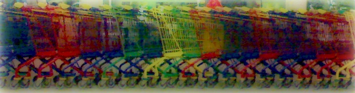

Marraskuu 2007 |
IsänpäiväMarraskuun kohokohta oli tietysti isänpäivä. Sami oli askarrellut koulussa isänpäiväkortin ja kipsisiilin. Kortissa kerrottiin lapsen totuuksia omasta isästä, kuten
Iltapäivällä tarjosimme vaarille ja mummille isänpäivälounaan. Pirjokin kävi onnittelemassa. PikkujuhlintaaMarraskuussa alkaa pikkujoulukausi. Glögin maistelun tosin aloitimme jo lokakuun puolella. Glögeistä suosikkimme oli "Blossa 07" -vuosikertaglögi. Se oli väriltään oranssinkeltaista ja se oli maustettu tyrnimarjalla. Ehdimme hamstrata sitä muutaman pullon ennekuin se loppui Alkoista. Marraskuussa juhlistettin myös mummin ja vaarin 60 vuotta sitten alkanutta seurustelua. Lisäksii glögiä nautittiin ukin mummin luona pikkujoulujen merkeissä. Elisa 125 vuottaHelsingin puhelinyhdistyksen eli nykyisen Elisan perustamisesta tuli tänä vuonna kuluneeksi 125 vuotta. Vuosipäivää juhlittiin Helsingin jäähallissa koko henkilökunnan voimin. Porukkaa oli kuskattu Virosta ja ympäri Suomen maata, kaikkialta missä elisalaisia tänä päivänä työskentelee. Estraadilla esiintyi useita artisteja ja tarkoin varjeltu yllätysesiintyjä oli Eppu Normaali. En ole koskaan pitänyt live-esityksistä, koska musiikkia soitetaan aivan liian kovaa. Nytkin laulajan ääni tuskin kuului ja sanoista ei saanut mitään selvää. En tahtonut edes tunnistaa muuten tuttuja kappaleita. Tämän päivän Elisa on kaukana siitä, mitä se oli silloin, kun me Mirjan kanssa tulimme sen palvelukseen. Omistajien näkökulmasta on varmasti menty ja mennään hyvään suuntaan (vaikka eräs islantilainen on toista mieltä). Työntekijöiden näkökulmasta kehitys ei välttämättä ole ollut yhtä mieleinen. Kiire ja epävarmuus ovat lisääntynteet ja motivaatio heikentynyt. Kaukana ollaan äiti-HPY:n ajoista. Lentopalloa pitkästä aikaaMuutaman vuoden tauon jälkeen kävin pelaamassa lentopalloa. Kysessä oli perinteikäs ystävyysottelu Elisa vastaan Yleisradio. Pelasimme Kisahallissa. Aluksi tuntui, ettei pitkähkö pelaamattomuus paljoakaan vaikuttanut. Homma sujui vanhasta muistista. Pian kuitenkin huomasin, että pelkällä arkisella portaiden kapuamisella ei pelin vaatimaa kuntoa ylläpidetä. Ensierän puolivälissä olin jo aivan puhki ja kurkku oli kuiva kuin Saharan erämaa. Toinen hämmentävä havainto oli, että maan vetovoima on kasvanut viime vuosina.
Me sitten hävisimme niukasti 2-1. Vaikkei pelaamiseni lopulta niin hääviä ollut, niin oli kuitenkin ihan mukavaa käydä pitkästä aikaa kokeilemassa, mitä se tuntuu. Vähän tällainen "comeback" oli mielessä kaivellutkin. |
Kuukauden sääLämpötila oli ehkä enimmäkseen joitakin asteita pakkasen puolella. Lunta oli jonkin aikaa maassa kymmenisen senttiä, mutta se suli kuitenkin pois. Huurretta kertyi helposti sekä maahan, että autojen ikkunoihin. Kuukauden ajatusSe kuoro lauloi niin kovaa kuin sielu lentää. Sami Kuukauden kuvaAhdistus kauppakeskuksessa Marraskuun kuvia |